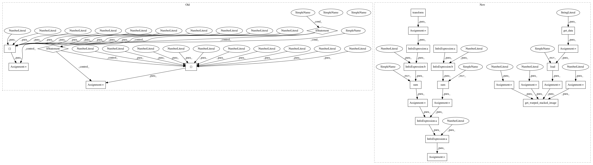

c7c80b8429ab70ea3b4d17451eac9cd5020e68a8,dipy/align/tests/test_imwarp.py,,test_em_2d_demons,#,929
Before Change
optimizer.full_energy_profile, 10)
print(energy_profile)
if USING_VC_SSE2:
expected_profile = \
[2.50773393, 3.26942324, 1.81684393, 5.44878881, 40.0195918,
31.87030788, 25.15710409, 29.82206485, 196.33114499, 213.86419995]
elif USING_GCC_SSE2:
expected_profile = \
[2.50773393, 3.26942352, 1.8168445, 5.44879264, 40.01956373,
31.65616398, 32.43115903, 35.24130742, 192.89072697, 195.456909]
assert_array_almost_equal(energy_profile, np.array(expected_profile),
decimal=5)
if __name__=="__main__":
After Change
version of EM in 2D, and this test checks that the current energy profile
matches the saved one.
"""
fname = get_data("t1_coronal_slice")
nslices = 1
b = 0.1
m = 4
image = np.load(fname)
moving, static = get_warped_stacked_image(image, nslices, b, m)
//Configure the metric
smooth=2.0
inner_iter=20
q_levels=256
double_gradient=False
iter_type="demons"
metric = metrics.EMMetric(
2, smooth, inner_iter, q_levels, double_gradient, iter_type)
//Configure and run the Optimizer
level_iters = [40, 20, 10]
optimizer = imwarp.SymmetricDiffeomorphicRegistration(metric, level_iters)
optimizer.verbosity = VerbosityLevels.DEBUG
mapping = optimizer.optimize(static, moving, None)
m = optimizer.get_map()
assert_equal(mapping, m)
warped = mapping.transform(moving)
starting_energy = np.sum((static - moving)**2)
final_energy = np.sum((static - warped)**2)
reduced = 1.0 - final_energy/starting_energy
assert(reduced > 0.9)
In pattern: SUPERPATTERN
Frequency: 4
Non-data size: 27
Instances
Project Name: nipy/dipy
Commit Name: c7c80b8429ab70ea3b4d17451eac9cd5020e68a8
Time: 2015-12-16
Author: jomarocegueda@gmail.com
File Name: dipy/align/tests/test_imwarp.py
Class Name:
Method Name: test_em_2d_demons
Project Name: nipy/dipy
Commit Name: c7c80b8429ab70ea3b4d17451eac9cd5020e68a8
Time: 2015-12-16
Author: jomarocegueda@gmail.com
File Name: dipy/align/tests/test_imwarp.py
Class Name:
Method Name: test_em_3d_gauss_newton
Project Name: nipy/dipy
Commit Name: c7c80b8429ab70ea3b4d17451eac9cd5020e68a8
Time: 2015-12-16
Author: jomarocegueda@gmail.com
File Name: dipy/align/tests/test_imwarp.py
Class Name:
Method Name: test_em_3d_demons
Project Name: nipy/dipy
Commit Name: c7c80b8429ab70ea3b4d17451eac9cd5020e68a8
Time: 2015-12-16
Author: jomarocegueda@gmail.com
File Name: dipy/align/tests/test_imwarp.py
Class Name:
Method Name: test_em_2d_demons
Project Name: nipy/dipy
Commit Name: c7c80b8429ab70ea3b4d17451eac9cd5020e68a8
Time: 2015-12-16
Author: jomarocegueda@gmail.com
File Name: dipy/align/tests/test_imwarp.py
Class Name:
Method Name: test_em_2d_gauss_newton